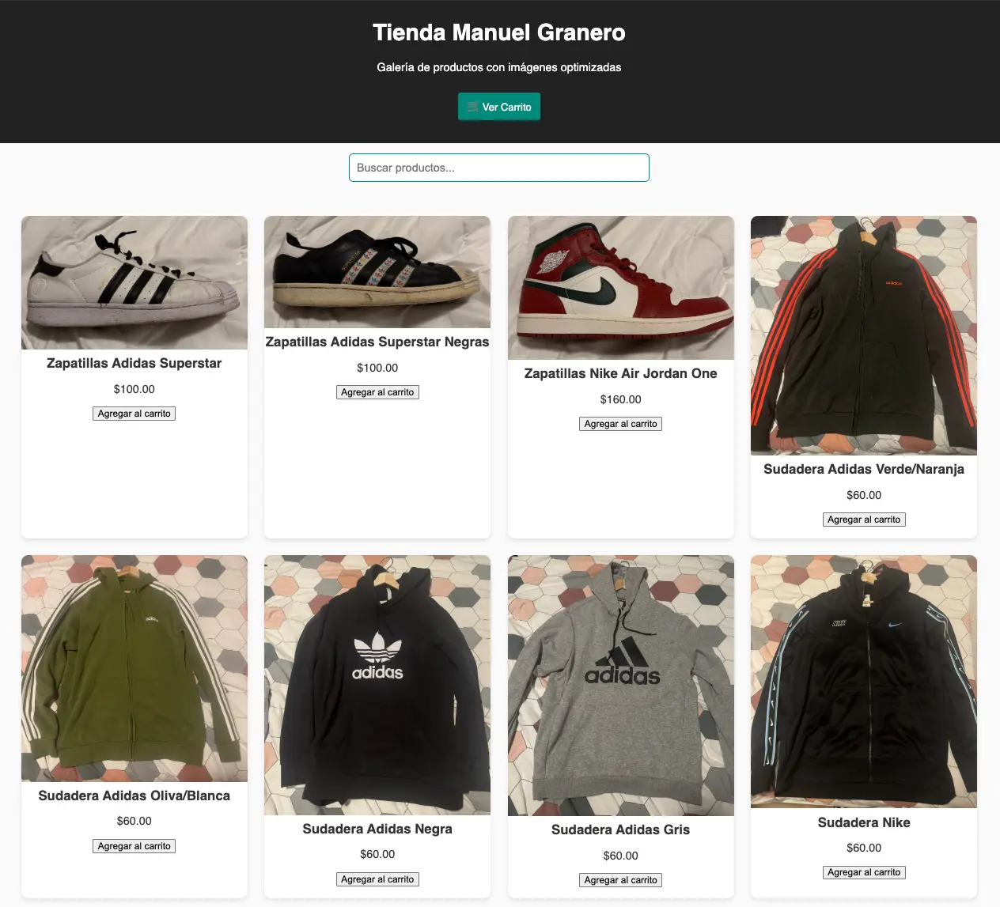

Tienda PWA
E-commerce diseñado bajo criterios de ecodiseño y sostenibilidad digital. Gestión de estado mediante Local Storage, cacheo con Service Workers y puntuación 100/100 en auditorías Lighthouse.
Desarrollador Web Full-Stack
Estudiante de DAW apasionado por el código limpio y la arquitectura de software. Especializado en crear soluciones con Angular y Symfony, con interés en el despliegue (Docker/Cloud) y buenas prácticas.
Más allá del código, soy una persona curiosa que disfruta entendiendo cómo funcionan las cosas. Actualmente estoy finalizando el Ciclo Superior de Desarrollo de Aplicaciones Web (DAW), donde he descubierto que mi pasión está en el equilibrio entre un backend robusto (Symfony/PHP) y un frontend usable (Angular).
Me motiva el ecodiseño y la optimización de recursos. Cuando no estoy programando, me encontrarás jugando a videojuegos o haciendo maratón de series.. Busco una oportunidad para aplicar lo aprendido y seguir creciendo en un equipo real.
Mi actividad en GitHub este año:
E-commerce diseñado bajo criterios de ecodiseño y sostenibilidad digital. Gestión de estado mediante Local Storage, cacheo con Service Workers y puntuación 100/100 en auditorías Lighthouse.
Digitalización del juego de mesa "Microrobots". Desarrollo de algoritmos para la generación aleatoria de tableros y validación de movimientos. Gestión de estado y persistencia mediante Sesiones PHP.

Diseño integral de interfaz para "Agencia Casablanca". Foco en UX/UI, accesibilidad y adaptabilidad móvil (Responsive). Implementación mediante Bootstrap 5 siguiendo principios de diseño Gestalt.
Mi implementación del autómata celular con patrones predefinidos.
Autómata celular clásico. Click para dibujar, Space para pausar. Pulsar sobre los nombres para crear vida 👽.
Especialización en desarrollo Full-Stack. Proyectos destacados en sostenibilidad y arquitectura MVC.
Especialización en Contabilidad y gestión de empresas.
Email: manuel.granero.dev@gmail.com · GitHub: @Neokull · LinkedIn: /in/manuel-granero-ferreira